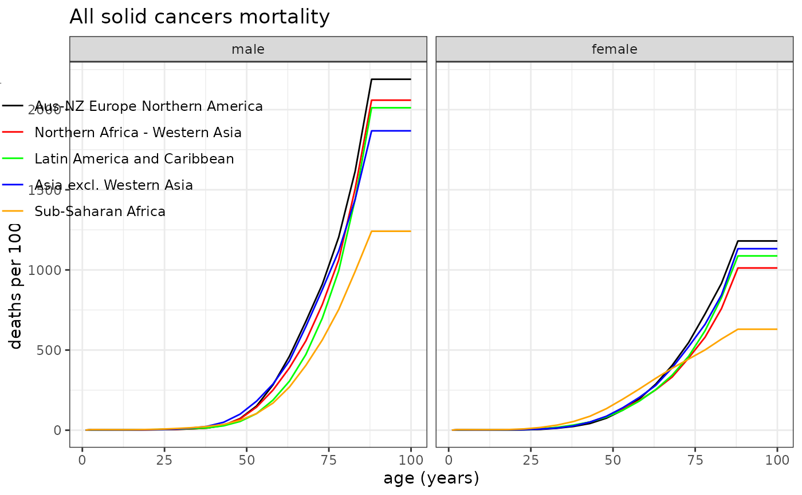
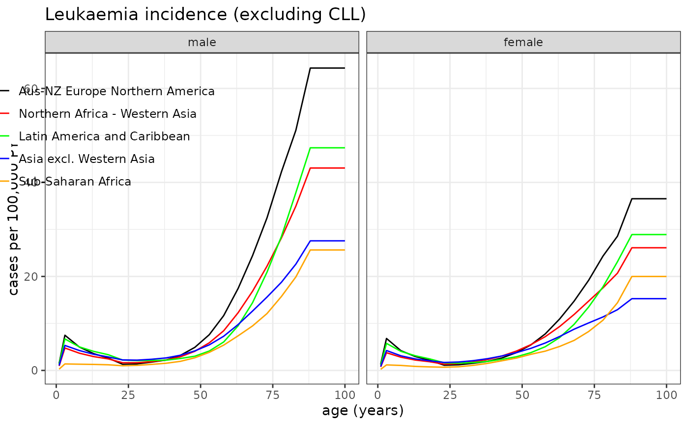

Plotting reference data
plot_refdata.Rdplot_refdata Plots the reference data of cancer incidence or mortality rates for the five WHO global regions.
Usage
plot_refdata(
dat,
outcome,
title = "",
ymax = NULL,
leg_pos = "none",
PER = 1e+05,
x_lab = "age (years)",
y_lab = "cases per 100,000 PY",
lsz = 9
)Arguments
- dat
Mortality or Incidence, which contains age- and sex-specific cancer incidence and mortality rates by cancer site and region.
- outcome
a character string that specifies the cancer site for which the rates are plotted.
- title
a character string that specifies the title of the plot.
- ymax
a value that specifies the maximum value for y-axis.
- leg_pos
a vector that specifies the legend x-y position ((1,1) for the top-right; default="none" for no-legend).
- PER
an integer value for the rate denominator (default=10^5)
- x_lab
x-axis label (default="age (years)")
- y_lab
y-axis label (default="cases per 100,000 PY")
- lsz
legend size (default=9)
Details
The parameter outcome can be chosen from one of the following character strings for both Mortality and Incidence: "esophagus", "stomach", "colon", "liver", "pancreas", "lung", "breast", "prostate", "bladder" "brainCNS", "thyroid", "all_leukaemia", "all_cancer", "allsolid-NMSC", "allsolid", "leukaemia" (leukaemia excluding CLL).
For MOrtality, "allcause" and "survival" can be additionally chosen.
Examples
# The following examples use default data provided in CanEpiRisk package
# for riskmodels (LSS_mortality and LSS_incidence) derived from Life Span Study
# and baseline mortality and incidence rates for WHO global regions (Mortality and Incidence)
# Example 1: All solid cancer mortality rates
plot_refdata( dat=Mortality, outcome="allsolid", title="All solid cancers mortality", leg_pos=c(0.27,0.95), y_lab="deaths per 100,000 PY" )

# Example 2: Leukaemia incidence rates
plot_refdata( dat=Incidence, outcome="leukaemia", title="Leukaemia incidence (excluding CLL)", leg_pos=c(0.27,0.95), y_lab="cases per 100,000 PY" )
